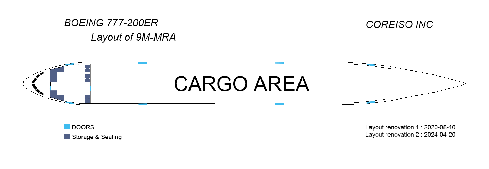
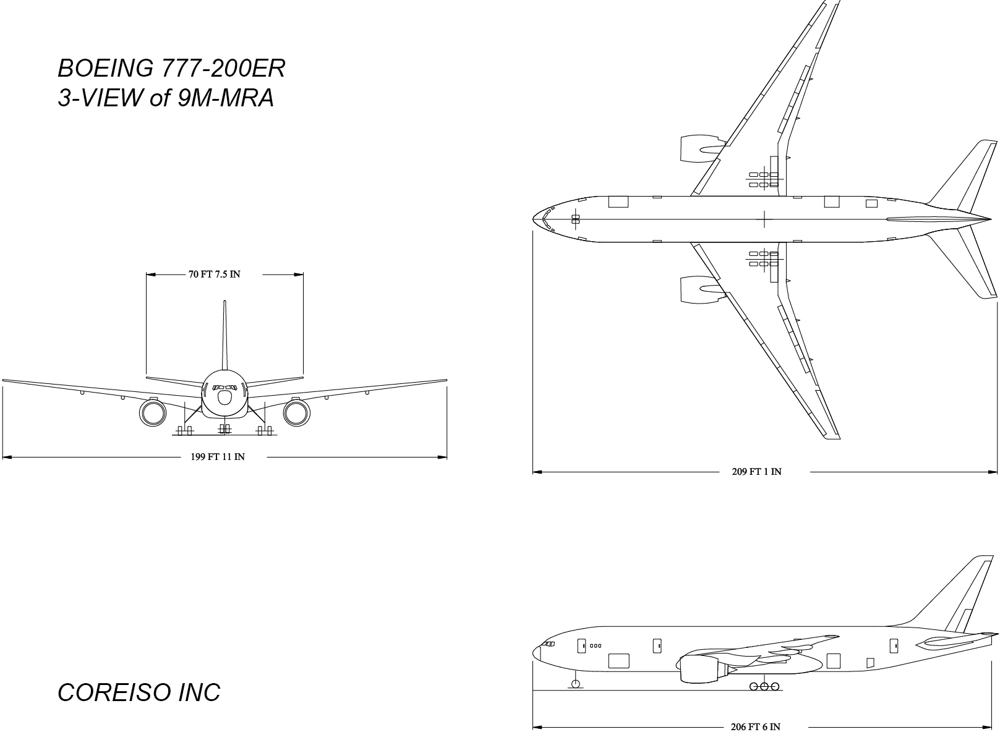
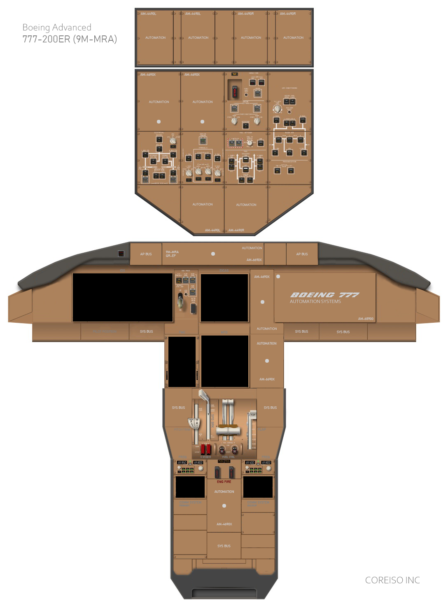
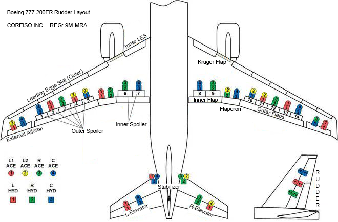
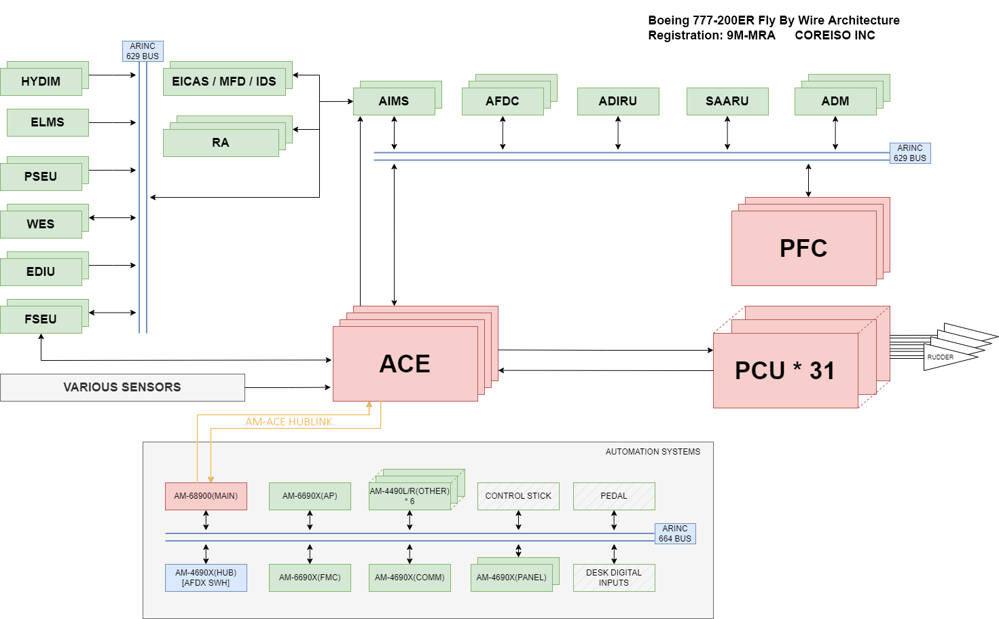
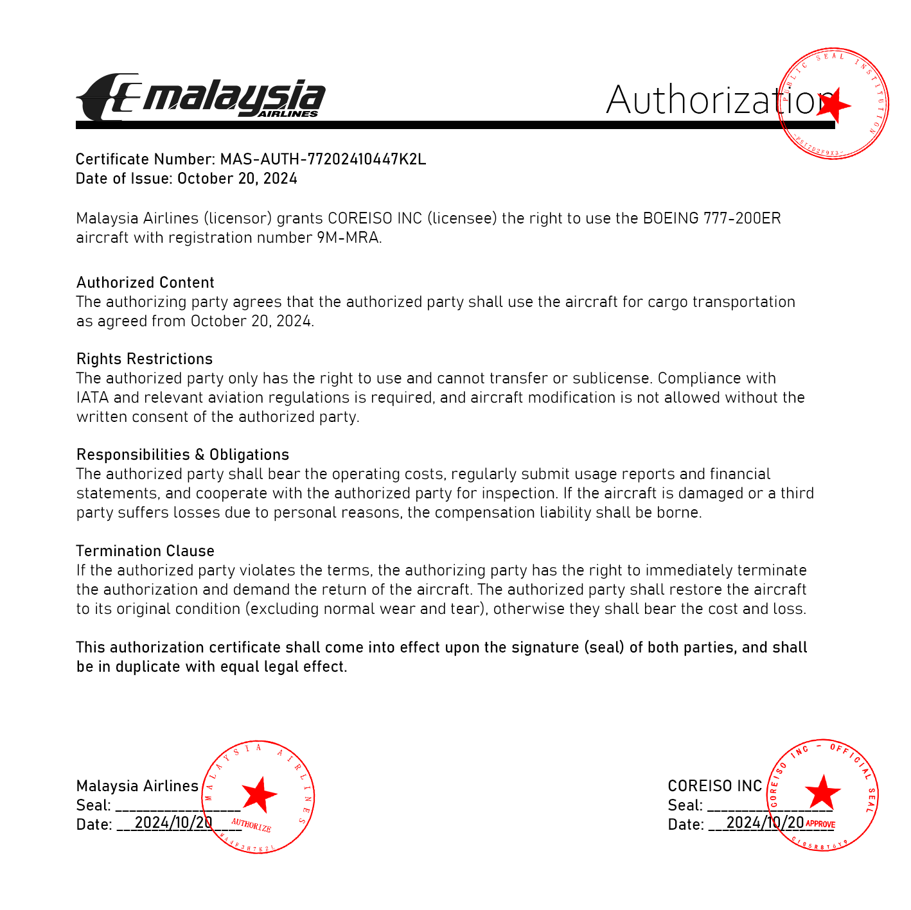

About the Informations of 9M-MRA
OVERVIEW
Operating History
On April 2, 1997, the Boeing 777-200ER with registration number 9M-MRA set sail from the Boeing Aircraft Manufacturing Plant in Seattle. After a long journey of 21 hours and 23 minutes, spanning 20044 kilometers (10823 nautical miles), it successfully arrived in Kuala Lumpur, Malaysia. This feat not only marked the delivery of the aircraft to Malaysia Airlines, but also broke the record for non-stop routes for commercial aircraft, even though no passengers were on board at the time.
After joining the Malaysia Airlines fleet, 9M-MRA began frequent flight missions. It shuttles between important cities around the world, undertaking the responsibility of passenger transportation and building a convenient air bridge for people to travel between Malaysia and the world. Its flight network is extensive, covering many popular international routes, such as between Amsterdam and Kuala Lumpur in Europe, as well as intra Asian routes such as Denpasar to Kuala Lumpur in Bali, providing passengers with comfortable and efficient travel options.
With the passage of time and the development and changes in the aviation industry, 9M-MRA completed its passenger mission at Malaysia Airlines in January 2016, withdrew from the fleet, and was subsequently arranged for storage at Kuala Lumpur International Airport (KUL). During the storage period, although it was in a relatively stationary state, all maintenance work was carried out in an orderly manner to ensure that the aircraft still had certain airworthiness conditions in case of new demands in the future.
In 2020, in order to adapt to the changes in the air cargo market and new plans for the reuse of aircraft resources, 9M-MRA underwent an important transformation and was converted into a bulk carrier. This modification involves significant adjustments to the internal structure of the aircraft, the removal of existing passenger facilities, and the installation of relevant equipment suitable for cargo transportation. However, after the modification was completed, it still remained in a sealed state at KUL, waiting for new operational opportunities.
Until 2024, COREISO INC took over the operation of 9M-MRA, giving this historically rich aircraft a new lease on life and continuing to be active in the aviation industry with a unique posture.
Technical Parameters
Basic Design:
- Body length: 63.73 meters (209 feet 1 inch)
- Wingspan: 60.9 meters (199 feet 9 inches)
- Height: 18.5 meters (60 feet 8 inches)
- Body width: 6.19 meters (20 feet 3 inches)
- Cabin width: 5.86 meters (19 feet 2 inches)
- Wing area: 427.8 square meters (4605 square feet)
Weight and Load Capacity:
- Maximum takeoff weight: 297550 kilograms (656000 pounds)
- Maximum landing weight: 213180 kilograms (469981 pounds)
- Empty weight: 138100 kilograms (304500 pounds)
- Maximum commercial load: 56925 kilograms (125498 pounds)
- Fuel capacity: 171171 liters (45220 gallons)
Engine and Thrust:
- Rolls-Royce Trent 892-17EP2 (Max-Thrust 92,000lbf / 409.2kilonewtons)
Performance:
- Cruise speed: 0.84 Mach (approximately 905 kilometers per hour)
- Maximum speed: 0.89 Mach (approximately 1028 kilometers per hour)
- Practical ceiling: 13137 meters (43100 feet)
Range:
- Standard configuration: 13080 kilometers (7065 nautical miles)
- Extreme range (light load): 14260 kilometers (7700 nautical miles)
- Takeoff distance: 3580 meters (11745 feet)
EVENTS
Join Malaysia Airlines Fleet
9M-MRA was born in 1997 and manufactured by Boeing Company in the United States. As a leading enterprise in the global aviation manufacturing industry, Boeing has advanced production technology and strict quality control system. This aircraft was assembled at Boeing's production plant, starting its glorious aviation journey here. Its serial number is 28408 and production line number (LN) is 64, each carrying its unique identity information and production history.
Exit Malaysia Airlines Fleet
In January 2016, due to various factors such as fleet strategy adjustment and operational cost optimization faced by Malaysia Airlines, 9M-MRA ended its nearly 20-year service life with Malaysia Airlines and officially withdrew from the fleet. Afterwards, it was placed under quarantine at Kuala Lumpur International Airport (KUL). During the storage period, the aircraft is in a special maintenance state, and the airline arranges professional personnel to regularly inspect and maintain the aircraft, including fuselage structure inspection, engine maintenance, aviation electronic equipment testing, etc., to ensure that key components of the aircraft will not be damaged due to long-term parking, maintain the basic airworthiness of the aircraft, and reserve hope for possible future reactivation.
Airframe Refitted
In 2020, the global aviation market landscape underwent significant changes, and the demand for air cargo presented a different development trend from the past. In this context, 9M-MRA has undergone a significant transformation from being converted into a bulk carrier. The modification project is a complex and meticulous work. A professional team dismantled the original passenger facilities such as seats and cabin decorations inside the aircraft, re planned and laid out the cabin space, and installed equipment such as mooring devices and cargo loading and unloading rails to meet the special needs of cargo transportation. However, despite completing the modification, due to the overall environment of the aviation market and other operational factors at the time, 9M-MRA was not immediately put into operation, but continued to be in a sealed state at KUL, waiting for the appropriate market timing and operational arrangements.
New Starting Point
In 2024, COREISO INC took over the operation rights of 9M-MRA from Malaysia Airlines, injecting new vitality into this aircraft. Remarkably, under the new operating entity, 9M-MRA still retains the classic livery of Malaysia Airlines. The fuselage is mainly decorated with the iconic colors of Malaysia Airlines, and the prominent airline logo is clearly visible. This coating is not only an exterior decoration, but also carries the brand image and historical memory of Malaysia Airlines. At the same time, the aircraft continues to use the call sign "MALAYSIAN". In aviation communication, this call sign can still evoke people's impressions of the Malaysia Airlines era, making 9M-MRA a unique development path in inheritance and transformation, and becoming a significant presence in the aviation field.
SUMMARY
The 9M-MRA, a Boeing 777-200ER, has undergone a series of significant transformations throughout its long aviation career, from delivery and operation to storage, modification, and re-entry into operation. It witnesses the development strategy and operational status of Malaysia Airlines in different periods, and also reflects the adjustment and transformation of the global aviation industry in response to changes in passenger and cargo market demand.
From initially serving as the main passenger aircraft of Malaysia Airlines, undertaking busy domestic and international flight tasks, to exiting the fleet due to industry development and company strategic adjustments, to being modified to adapt to the freight market, and finally being taken over by COREISO INC while retaining the original livery and call sign, each stage has a unique significance. It is not only an airplane, but also a vivid epitome of the development process of the aviation industry. In the future, with the continuous changes and development of the aviation market, 9M-MRA is expected to continue to play a role in the aviation field under the operation of COREISO INC, continuing its unique chapter and providing continuous attention and research value for aviation enthusiasts and related practitioners.
ANNEXES
Airframe Details
x9M-MRA Malaysia Airlines Boeing 777-2H6ER-----------------------------------------Manufacturer Serial Number (MSN): 28408Line Number: 64 SELCAL: QR-EFAircraft Type: Built as Boeing 777-2H6ERFirst Flight: 26 Mar 1997Engine Model: Rolls-Royce Trent 892-17EP2Test Registration: N5017VProduction Site: Everett (PAE)Airframe Status: ActiveAirframe Layout
Airframe 3-View

Airframe Cockpit
Control Panel Layout

GND PROX
- G/S INHIBIT: Typically used to suppress glide slope related functions and prevent unwanted glide slope signal interference in specific situations.
- FLAP OVRD: When the flap system malfunctions or special operations are required, this override switch can be used to intervene in the control of the flaps and bring them to the desired state.
- GEAR OVRD: Used to manually override and control the landing gear retraction and deployment actions in the event of a malfunction in the landing gear retraction and deployment system.
- LOCK OVRD: Used for overriding landing gear locking and other related systems.
- TERR OVRD: Overcontrol operations can be performed when specific terrain related systems encounter problems or require special operations.
- ALTN GEAR: Related to the backup landing gear system, this switch can be used to activate the operation mode of the backup landing gear when the main landing gear system fails.
ELECTRICAL
- BATTERY: When the switch is set to "ON", it connects the aircraft battery power supply to provide power for the initial stages of the aircraft's ground start-up, or to provide backup power in the event of a main power failure.
- APU (Auxiliary Power Unit): ON and OFF control the start and stop of the APU, and the "START" button is used to start the APU. APU can provide power and bleed air for aircraft on the ground or in the air.
- APU GEN: When the switch is set to "ON", the APU generator supplies power to the aircraft electrical system.
- L BUS TIE and R BUS TIE: When the switch is set to "AUTO", it automatically controls the connection and disconnection of the left and right main busbars to achieve reasonable allocation and backup of the power system.
- SECONDLY EXT PWR and PRIMARY EXT PWR: Used to connect and control external power sources to supply power to the aircraft. Under normal circumstances, the first external power source is prioritized.
- L MAIN GEN CTRL and R MAIN GEN CTRL: When the switch is set to "ON", the left and right main generators are turned on, which are driven by the engine to generate electricity.
- BACKUP GEN (L and R): The "ON" switch controls the standby generator to be put into use in specific situations such as main generator failure, providing emergency power.
RAM AIR TURBINE: This switch is used to control the release and retraction of the ram air turbine. When there is a serious malfunction in the hydraulic or electrical system of an aircraft, the ram air turbine can be manually released to generate hydraulic or electrical power through airflow, providing emergency power for critical systems.
HYDRAULIC
- C1 -- ELEC -- C2: Representing electrical connections or controls related to the hydraulic system, two "ON" switches are used to connect the electrical control circuit between C1 and C2, ensuring the normal operation of the hydraulic system's electrical related functions.
- L ENG and R ENG: The "ON" switch is used to control the working status of the hydraulic pumps driven by the left and right engines. When turned on, the corresponding engine driven hydraulic pumps operate to provide pressure to the hydraulic system.
- L ELEC and R ELEC: The "ON/OFF" switch below is used to control left and right electrical related functions. When "ON", the function is activated, and when "OFF", it is turned off. When the switch is in "AUTO", it automatically controls left and right electrical related functions.
FUEL JETTISION
- L NOZZLE and R NOZZLE: Used to control the left and right fuel abandonment nozzles. When it is necessary to urgently discard fuel (such as when the aircraft is overweight and needs to land), turn on these switches, and the fuel can be discharged through the corresponding nozzle.
- FUEL TO REMAIN: Used to set or display the expected remaining fuel level, which can be used as a reference during the fuel abandonment process.
- ARM: Press this switch to pre position the fuel abandonment system, putting it in a ready to work state.
FUEL
- L PUMPS FWD and L PUMPS AFT: The "ON" switch is used to control the start and stop of the left front and left rear fuel pumps, providing pressure to the fuel system.
- R PUMPS FWD and R PUMPS AFT: Similar to the left fuel pump, they control the working status of the right front and right rear fuel pumps.
- CROSSFEED FWD and CROSSFEED AFT: switch controls the front and rear fuel supply function, which can achieve fuel transfer between the left and right fuel tanks when turned on, used to balance fuel or for specific engine fuel supply needs.
- CENTER PUMPS: The "L (left)" and "R (right)" switches respectively control the left and right fuel pumps of the central fuel tank, used to deliver fuel from the central fuel tank to the engine and other parts.
CARGO FIRE
- FWD and AFT: These two buttons correspond to the front and rear cargo compartments of the aircraft, respectively. When the cargo hold fire alarm system detects signs of fire in the front or rear cargo hold, the relevant indicator lights may light up. If the fire alarm is confirmed, the corresponding button can be pressed for further operation.
- DISCH: There are two DISCH buttons, one for releasing fire extinguishers from APU and the other for releasing fire extinguishers from the front and rear cargo compartments. After confirming the fire, press the corresponding DISCH button to release the extinguishing medium into the APU or cargo hold to extinguish the fire.
- FIRE/OVHT TEST: Used to test whether the cargo hold fire alarm and overheat detection system is working properly. Pressing this button will cause the system to perform a self-test, and the corresponding indicator lights should turn on and off as expected to indicate that the system is functioning properly.
ENGINE
- ECC MODE: Generally, it remains in normal mode. When the engine control computer malfunctions or requires special settings, it may involve mode switching and other operations, but it must be strictly followed according to the flight manual.
- START: There are three START related buttons, with manual start buttons located on the left and right sides, used to start the left and right engines under normal conditions; The AUTOSTART button in the middle is used for setting the automatic start mode. After activating the automatic start function, the system will start the engine according to the preset program.
AIR CONDITIONING
- RECIRC FANS: There are two switches, "UPPER" and "LOWER". When placed in the "ON" position, the upper and lower recirculation fans are respectively activated to circulate air in the cabin, improve air utilization efficiency, and reduce the load on the air intake system.
- FLT DECK TEMP: This knob is used to set the control mode for the cockpit temperature. Turning the knob can set the desired temperature for the cockpit, and the AUTO mode system will automatically adjust to maintain that temperature. 'C' represents cold, 'W' represents warm.
- AIR COND RESET: When the air conditioning system malfunctions or is abnormal, you can press this button to attempt to reset the air conditioning system and restore its normal working state.
- L PACK and R PACK: When these two switches are placed in the "AUTO" position, the left and right air conditioning components will operate in automatic mode, automatically adjusting cooling, boosting, and other functions according to the needs and settings of the aircraft.
- L - TRIM AIR - R: These two switches are used to control the supply of left and right balance air. Balancing air is used to adjust the temperature and pressure balance inside the cabin, and opening the switch can increase the corresponding side's balancing air flow.
BLEED AIR
- L ISLN and C ISLN and R ISLN: When the switch is set to "AUTO", these isolation valves will automatically control the on/off of the left, middle, and right bleed air ducts according to the system requirements of the aircraft, to ensure the proper operation of the bleed air system and isolate faults.
- L ENG and R ENG: The "ON" switch is used to connect the bleed air of the left and right engines. When the engine is running, high-temperature and high-pressure air can be drawn from the compressor for use in air conditioning, anti icing, and APU startup.
- APU (Auxiliary Power Unit): When the switch is set to "AUTO", the APU bleed air system will automatically control the supply of bleed air according to the aircraft's needs. The APU can provide bleed air to the aircraft on the ground or in the air.
PRESSURIZATION
- FWD - OUTFLOW VALVE - AFT: When both switches are set to "AUTO", the front and rear outflow valves of the aircraft will automatically adjust to maintain cabin pressure by controlling the amount of air flowing out of the aircraft, ensuring that cabin pressurization is within a safe and reasonable range.
Standardized Manual Execution Process For 9M-MRA
STARTING
1. ELECTRICAL
TURN ON
BATTERY → ON
PRIMARY EXT PWR → ON
APU → ON → START
APU GEN → ON
L MAIN → ON
R MAIN → ON
BACKUP GEN
- L → ON
- R → ON
2. BLEED AIR
TURN ON
- L ENG → ON
- R ENG → ON
3. AIR CONDITIONING
TURN ON
RECIRC FANS
- UPPER → ON
- LOWER → ON
TRIM AIR
- L → ON
- R → ON
4. HYDRAULIC
TURN ON
ELEC
- C1 → ON
- C2 → ON
R ENG → ON
L ENG → ON
5. FUEL
TURN ON
L PUMPS
- FWD → ON
R PUMPS
- FWD → ON
L PUMPS
- AFT → ON
R PUMPS
- AFT → ON
6. ENGINE
TURN ON
- AUTOSTART → ON
CLOSING
1. ENGINE
TURN OFF
- AUTOSTART → OFF
2. FUEL
TURN OFF
L PUMPS
- FWD → OFF
R PUMPS
- FWD → OFF
L PUMPS
- AFT → OFF
R PUMPS
- AFT → OFF
3. HYDRAULIC
TURN OFF
R ENG → OFF
L ENG → OFF
ELEC
- C1 → OFF
- C2 → OFF
4. AIR CONDITIONING
TURN OFF
TRIM AIR
- L → OFF
- R → OFF
RECIRC FANS
- UPPER → OFF
- LOWER → OFF
5. BLEED AIR
TURN OFF
- L ENG → OFF
- R ENG → OFF
6. ELECTRICAL
TURN OFF
BACKUP GEN
- L → OFF
- R → OFF
L MAIN → OFF
R MAIN → OFF
APU GEN → OFF
APU → OFF
PRIMARY EXT PWR → OFF
BATTERY → OFF
THE ABOVE OPERATION IS THE CORE PROGRAM, IF THERE ARE UNFORESEEABLE PROBLEMS WITH THE AIRCRAFT IN THE AIR OR ON THE GROUND, PLEASE CHECK EICAS AND MFD AS SOON AS POSSIBLE AND FOLLOW MFD'S PROMPTS AND SUGGESTIONS FOR EMERGENCY HANDLING
Fly By Wire Architecture
The Boeing 777 aircraft adopts a traditional exterior layout with two wing mounted engines.
There are a pair of outer ailerons, a pair of flap ailerons, seven pairs of spoilers, as well as leading edge slats, trailing edge flaps and other lift enhancement devices arranged on both wings.
The tail wing is equipped with a horizontal stabilizer, a pair of elevators, and a rudder.
Among them, elevators and horizontal stabilizers are used to achieve pitch control; Flaps, ailerons, and spoilers are used to achieve roll control; The rudder is used to achieve yaw control.
The lower section of the rudder has a movable small control surface (adjustment plate). The rotation speed of the adjustment plate is twice that of the main control surface to provide additional yaw control capability.

The Boeing 777 fly by wire flight control system mainly consists of the following components: 3-degree main flight computer PFC, 4-degree actuator control electronic device ACE, power control unit PCU, control stick/disc, pedals, ARINC 629 bus, etc.
The subsystems that are interconnected with the external environment include: Automatic Flight Control Director (AFDC), Aircraft Information Management System (AIMS), Air Data Inertial Reference Unit (ADIRU), Backup Attitude and Air Data Reference Unit (SAARU), etc.

HYDIM（Hydraulic Interface Module）： The hydraulic interface module monitors the status of the hydraulic system, provides feedback on hydraulic pressure and other data to the flight control system, and ensures the normal hydraulic drive of the control surface actuator.
ELMS（Engine/Landing Gear Monitoring System）： The engine/landing gear monitoring system collects engine parameters and landing gear status for the flight control system to adjust strategies under different operating conditions (such as takeoff and landing).
PSEU（Proximity Switch Electronic Unit）： Approaching the electronic components of the switch, processing position signals of landing gear, cabin doors, and other components (such as folding/lowering), and participating in flight control logic judgment.
WES（Wheel Electronic System）： The wheel electronic system manages data such as wheel brakes and tire pressure for flight control during ground taxiing or landing phases.
EDIU（Engine Data Interface Unit）： The engine data interface unit collects data such as engine thrust and speed, allowing the flight control to control the flight based on the power status.
FSEU（Flight Spoiler Electronic Unit）： The electronic unit of the flight spoiler is specifically designed to control the deployment/retraction of the spoiler, assist in deceleration and attitude adjustment.
EICAS/MFD（Engine Indication and Crew Alerting System/Multi-Function Display）： Engine indication and crew alarm system/multifunctional display, displaying flight control status and alarm information, assisting in crew monitoring.
IDS（Integrated Display System）： The integrated display system integrates flight, navigation, engine and other data, visually displays key information (such as altitude, airspeed, weather) through the cockpit screen, and assists pilots in real-time decision-making and operation.
RA（Radio Altimeter）： Radio altimeter measures the vertical distance between the aircraft and the ground, providing altitude related control for flight control during approach and landing phases.
AIMS（Aircraft Information Management System）： The aircraft information management system integrates all aircraft data, provides comprehensive information for flight control, and supports system collaboration.
AFDC（Automatic Flight Control Director）： The automatic flight control director generates commands such as heading and altitude maintenance in autopilot mode, and cooperates with the flight control to achieve automatic flight.
ADIRU（Air Data Inertial Reference Unit）： The atmospheric data inertial reference unit provides core data such as attitude, heading, airspeed, barometric altitude, etc., and is the foundation of flight control calculations.
SAARU（Solid State Attitude and Reference Unit）： Solid state attitude reference unit, assisting in determining aircraft attitude and providing attitude reference for flight control.
ADM（Air Data Module）： The atmospheric data module processes static and dynamic pressure data, calculates airspeed and altitude, and provides flight control with the ability to determine flight status.
ACE（Actuator Control Electronics）： The actuator control electronic device, flight control core computer, receives operational inputs and sensor data, calculates and generates control surface control instructions, and has redundant design to ensure reliability.
PFC（Primary Flight Computer）： The main flight computer participates in flight control law calculations, processes trajectory and attitude control logic, and collaborates with ACE to enhance flight control capabilities.
PCU（Power Control Unit）： The power control unit, after receiving flight control commands, drives the control surfaces (such as elevators, ailerons, and rudders) through hydraulic or electric means to achieve attitude changes, and is the ultimate executor of flight control commands.
Operation Modes
Normal mode:
In normal mode, the driver controls the control lever/disc, pedals, and speed brake lever, sends sensor analog signals to the actuator control electronic device ACE, and converts them into digital signals to be sent to the main flight computer PFC through the ARINC 629 bus.
PFC exchanges data with aircraft systems through the flight control bus. It receives signals from the air data inertial reference unit ADIRU or backup attitude and air data reference unit SAARU, as well as the aircraft information management system AIMS, and generates corresponding control instructions through control law calculations.
The calculated digital command signal is sent from PFC to ACE through the flight control bus. ACE converts these command signals into analog signals and sends them to a total of 31 PCUs, including ailerons, elevators, horizontal stabilizers, and rudders, to complete aircraft control.
Secondary mode:
When the flight control system has internal faults or lacks other system input information to support normal mode operation, the system automatically switches to secondary mode, and PFC executes the reconstructed control law.
Direct mode:
When the system loses 3 PFCs, it enters direct mode. The ACE receives driver commands and provides basic control capabilities from the pole to the rudder.
Mechanical backup:
When the electrical system completely fails, the system still provides a pair of spoilers (4 # and 11 # spoilers) and mechanical control backup of the horizontal stabilizer (ultimate backup), allowing for temporary control of the aircraft.
Mechanical backup cannot achieve safe flight and landing, it is only used to stabilize the aircraft attitude and wait for the restart of the fly by wire flight control system.
- Authorization (SEAL)
COREISO INC 2025 & MALAYSIA AIRLINERS 2025